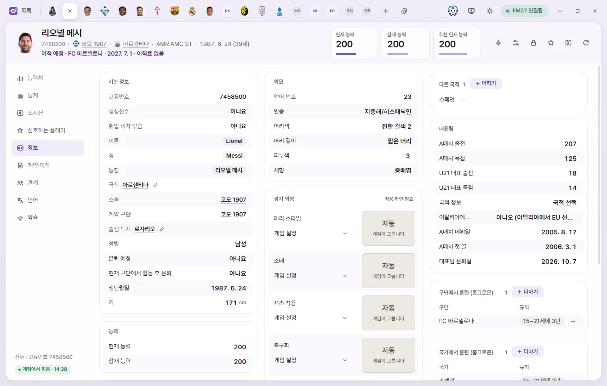
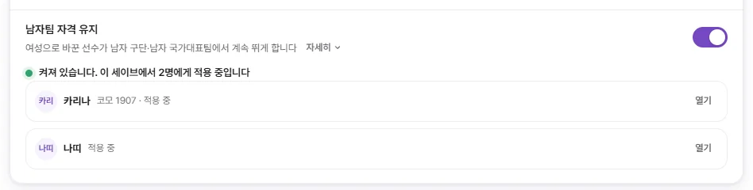
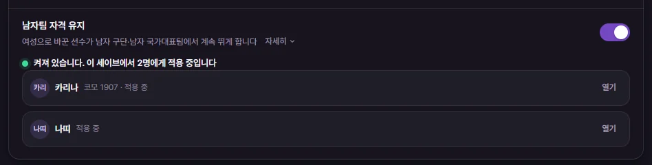

도구
성별 바꾸기
선수의 성별을 여성으로 바꾸고, 그 선수가 남자 구단·남자 국가대표팀에서 계속 뛰게 하는 '남자팀 자격 유지'를 설명합니다.
어디서 바꾸나요
선수 탭 › 정보 › 기본 정보 묶음의 성별 칸(남성 / 여성)에서 바꿉니다. 성별은 선수 탭에서 한 명씩 바꾸세요. 백업 확인과 남자팀 자격은 선수 탭에서 바꿀 때 함께 처리됩니다.
- 선수 탭을 열고 왼쪽의 정보를 누릅니다.
- 성별 칸을 눌러 여성을 고릅니다. 바로 아래에 남자팀 자격 줄이 생기고 '유지'로 켜집니다.
- 위쪽 저장을 누르거나 Ctrl+S를 누릅니다.
- 처음 한 번은 '세이브를 백업해 두셨습니까?'를 묻습니다. 세이브를 따로 백업한 뒤 백업했습니다를 누릅니다.
- '이름: 여성 · 남자팀 자격 유지' 알림이 뜨면 끝입니다.


남자팀 자격 유지
게임은 여성 선수를 남자 구단과 남자 국가대표팀에 넣지 않습니다. 남자팀 자격을 '유지'로 두면 FMAX가 게임 규칙을 바꿔서, 그 선수를 누가 어느 구단·국가대표팀에서 뛸 수 있는지 정하는 곳과 선수 목록에서 남자 선수처럼 셉니다. 성별 값은 여성 그대로입니다.
남자팀 자격 줄
성별 칸 바로 아래 줄입니다. 값은 유지 / 안 함이고, 옆의 점이 지금 상태를 보여 줍니다.
| 점 | 뜻 |
|---|---|
| 초록 | 지금 게임에 적용 중입니다 |
| 회색 | 편의 기능 화면에서 꺼 두었거나, 게임에 연결되면 적용합니다 |
| 주황 | 게임에 적용하지 못했습니다. 편의 기능 화면에서 이유를 확인하세요 |
- 원래 여성인 선수(여자 선수)에게도 이 줄이 보입니다. '안 함'을 눌러 '유지'로 바꾸고 저장하면 그 선수도 남자팀에서 뛸 수 있게 됩니다.
- 이미 '유지'인 여성 선수는 이 줄만 따로 끌 수 없습니다. 위의 성별을 남성으로 바꾸고 저장하면 남자팀 자격도 함께 꺼집니다.
편의 기능 화면의 '남자팀 자격 유지'
왼쪽 도구 편의 기능 화면의 선수 묶음에 남자팀 자격 유지 줄이 있습니다.
- 이 세이브에서 여성으로 바꾼 선수가 모두 나옵니다. 선수마다 '적용 중', '적용 중 · 아직 여자 선수 목록에 있음', '이 게임에 없음'이 붙고, 열기로 그 선수의 정보 탭을 엽니다.
- 스위치 하나로 모든 선수의 규칙을 켜고 끕니다. 선수 목록은 세이브마다 따로 남고, 스위치는 모든 세이브에 같이 적용됩니다.
- 스위치를 끄면 확인한 뒤 FMAX가 바꾼 게임 규칙을 원래대로 돌립니다. 선수들은 여성 그대로이고 목록도 남아서 언제든 다시 켤 수 있습니다.



백그라운드 도우미가 하는 일
남자팀 자격 규칙은 창이 없는 FMAX 도우미 프로그램이 맡습니다. 처음 성별을 바꾸거나 규칙을 켤 때 FMAX가 이 도우미를 시작합니다.
- 도우미는 FMAX에 저장된 선수 목록을 읽고, 스위치가 켜져 있으면 게임에 규칙을 넣습니다.
- FMAX 창을 닫아도 도우미는 남아서 규칙을 지킵니다. 게임을 껐다 켜면 새 게임에 다시 규칙을 넣습니다. 세이브를 불러오기 전에 넣기 때문에 선수 목록이 처음부터 맞습니다.
- 도우미는 PC를 끄면 함께 꺼집니다. PC를 다시 켠 뒤에는 세이브를 불러오기 전에 FMAX를 먼저 켜 주세요. 규칙 없이 세이브를 불러오면 선수 목록이 어긋납니다.
- 편의 기능 화면의 스위치를 끄면 도우미가 규칙을 원래대로 돌립니다.
- 설정의 FMAX를 다시 켜면 지난번 상태 그대로를 꺼도 이 스위치는 꺼지지 않습니다. 직접 끌 때까지 규칙이 계속 적용됩니다.
- 게임이 업데이트되어 FMAX가 아는 것과 다르면 규칙을 넣지 않고 멈춥니다. 세이브 파일과 게임 설치 파일은 고치지 않습니다.
세이브를 다시 불러와야 하는 경우
게임은 세이브를 불러올 때 남자·여자 선수 목록을 만듭니다. 그래서 규칙이 그 뒤에 들어가면 선수가 아직 여자 선수 목록에 남아 있을 수 있습니다. 아래 경우에는 게임에서 세이브를 한 번 다시 불러오세요.
- 알림이나 편의 기능 화면에 '세이브를 한 번 다시 불러와야 남자팀 선수 목록에 들어갑니다'가 보일 때
- 편의 기능 화면 선수 줄에 '적용 중 · 아직 여자 선수 목록에 있음'이 보일 때
- 도우미가 돌지 않는 동안(예: PC를 다시 켠 뒤 FMAX를 켜기 전) 세이브를 불러왔을 때
- 남자팀 자격 유지를 끈 뒤 계속 플레이할 때
잘 안 될 때
| 화면 글 | 할 일 |
|---|---|
| 게임이 바쁜 순간이었습니다 | 게임을 멈춘 상태에서 다시 합니다 |
| 게임의 해당 부분이 FMAX가 아는 것과 다릅니다 | FMAX가 갑자기 꺼졌거나 다른 도구가 같은 곳을 바꿨을 수 있습니다. 게임을 완전히 껐다 켠 뒤 다시 합니다 |
| 읽기 전용으로 실행 중이라 게임에 쓰지 않습니다 | FMAX를 평소처럼 켭니다 |
| FMAX가 아는 버전과 다른 게임입니다 | 게임 버전에 맞는 FMAX가 나올 때까지 쓸 수 없습니다 |
| 성별은 선수 화면에서 한 명씩 바꿔 주세요 | 아직 백업 확인을 하지 않았습니다. 선수 탭에서 한 명을 바꿔 확인을 마칩니다 |
남자 구단으로의 이동과 남자 국가대표 소집은 확인했습니다. 정상 이적 협상의 계약 체결, 대표팀 경기 출전, 수상까지 남자 선수와 똑같이 되는지는 아직 확인하지 않았습니다.